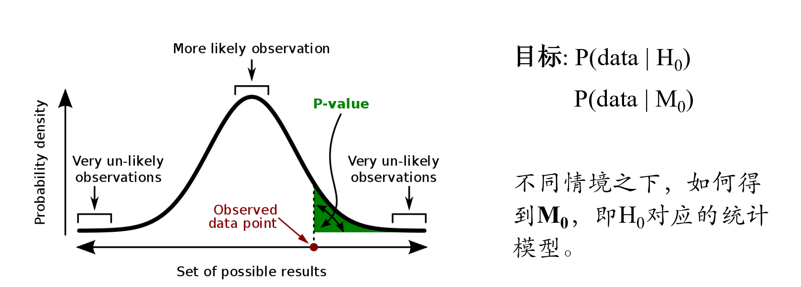
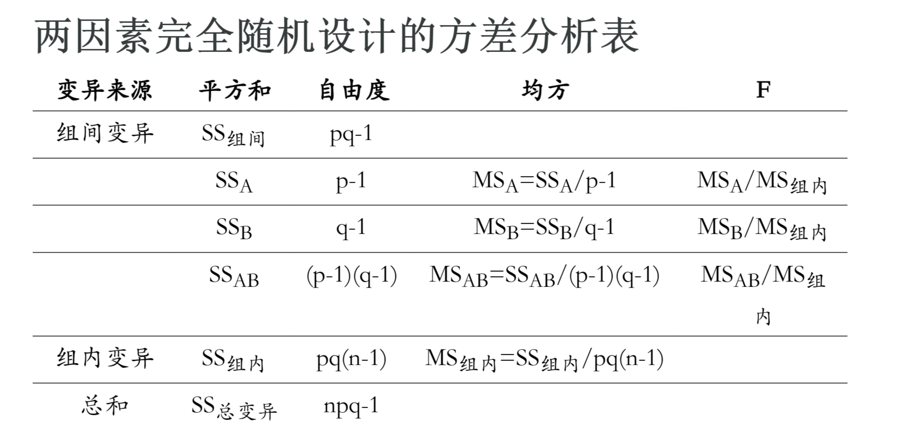
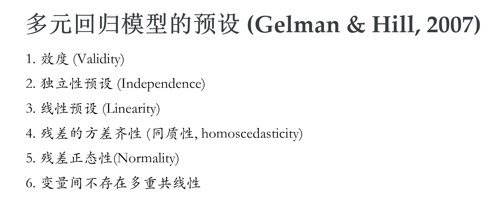
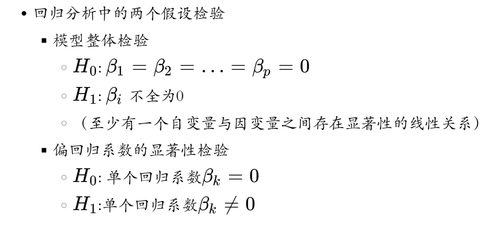
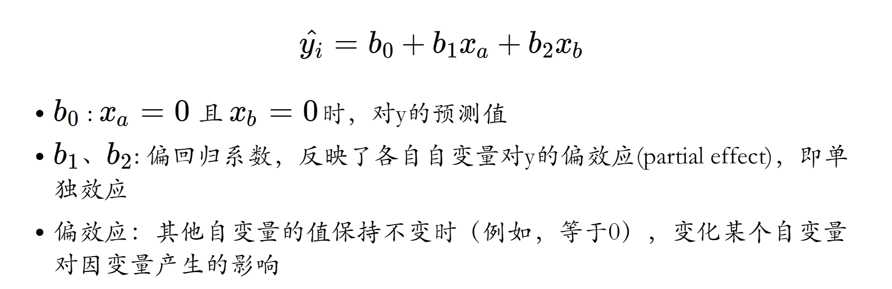
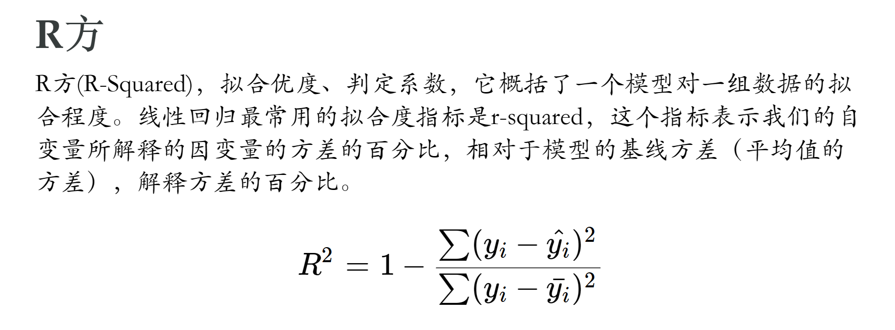
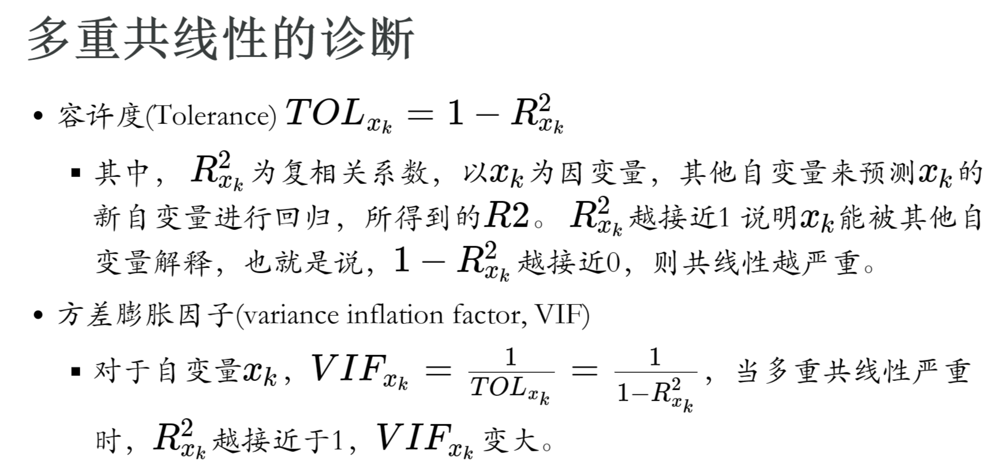
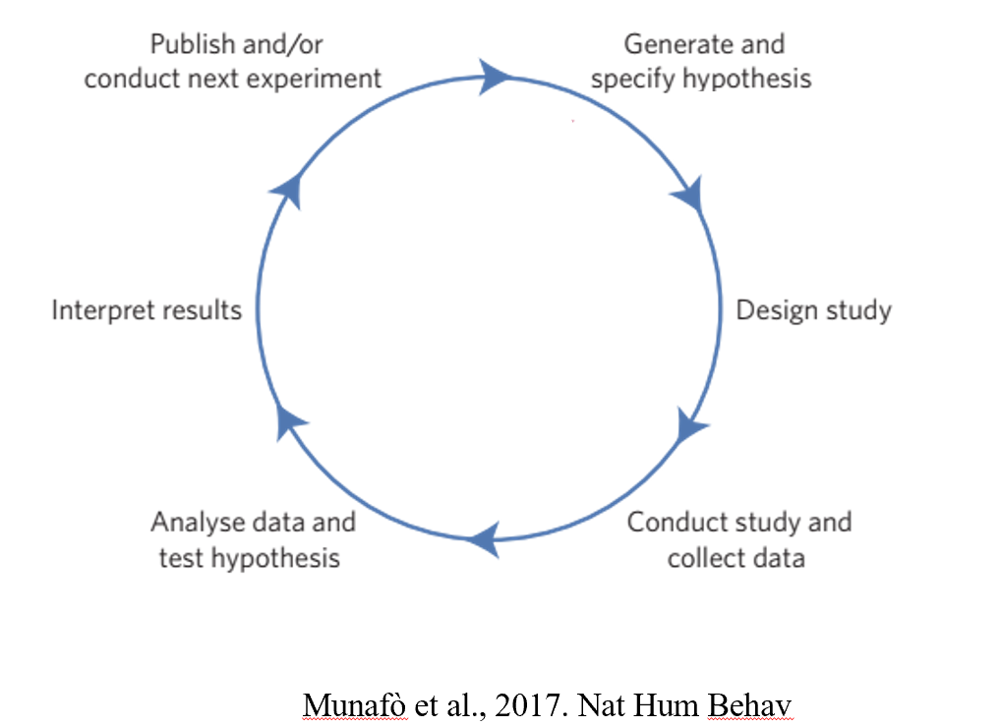

[1] 8.166667心理统计学下 期末总结
Hu Chuan-Peng
2023-12-26
基础部分
总结
在NHST框架之下的四种大的应用场景：
方差分析
线性回归
频次检验
非参数检验
NHST
总结：方差分析
目标
- 比较多组之间的均值差异（是否至少有一对之间有差异）
困难
- 组数多，两两比较不适合
解决方案
使用“方差”——均值与均值之间差异——来突破。
M0 : 均方——单位方差——的比值的分布，即F分布

总结：方差分析
细节的知识点
方差分解的原理
不同情境（实验设计）下的方差分析表（方差分解、自由度与F值的计算）
方差分析的预设
方差分析结果的解读
如何将方差分析整合到数据分析的workflow之中？
方差分析中的关键概念
方差分析中的关键概念
因素
水平
处理与处理水平的结合
主效应与交互作用
简单效应
…
以两因素完全随机设计的方差分析为例
总结：线性模型
线性模型是一类统计模型，可以广泛用于各种研究目的。在《心理统计学》中，一般仍然侧重NHST的角度。
假设检验
参数估计
预测
…
总结：线性模型(NHST)
目标
- 变量之间的关系是否存在
解决方案
- M0 : 因变量是自变量的线性组合。
总结：线性模型(NHST)
细节知识点：
使用线性模型的前提预设
线性模型的通常表达形式
回归系数的显著性检验与解读
模型的评估（R2）
多个自变量时如何选择留在线性模型中？
多重共线性
标准化的与非标准化的回归系数
…
使用线性模型的前提预设
回归系数的显著性检验与解读
以多元回归方程为例
模型的评估（R2）
多重共线性
总结：频数分析
目标
- 比较频数分布的差异
困难
- 频次数据明显并非正态分布
解决方案
使用频次数据的差异作为分析视角
M0 : Chi-squared
总结：频数分析
细节知识点：
如何计算卡方值
适合性检验中如何计算
（独立性）列联表中如何计算
如何将卡方整合到数据分析的流程中？
独立性\(\chi^2\)检验workflow
某单位提出一套新的改革办法，并进行了对改革意见的民主测评，后又进行了演讲，为了查看演讲对员工接受度的影响效果，进行了第二次对改革意见的民主测评。
问题：演讲是否改变了员工态度，是否使得拥护政策的人数增加？
两次民主测评的结果如下：


问题：演讲是否改变了员工态度，是否使得拥护政策的人数增加？
b (原来反对，后来拥护)人数是否大于c (原来拥护，后来反对)人数？
\(\chi^2 = \frac{(b - c)^2}{b + c}\)
\(df = (r - 1)(c - 1)\)
- 提出假设
\(H_{0}\)：两个变量相互独立，即前后两次测评的员工意见不存在差异
\(H_{1}\)：两个变量相关，前后两次测评的员工意见存在差异
- 根据虚无假设\(H_{0}\)，选择相应的统计模型。
\(\chi^2\)检验前提：
随机样本数据。
理论频数>5或理论频数<5的格子数不能超过总格子数的1/5。
- 确定显著性水平\(\alpha\)，\(\alpha\)确定后，否定域也随之被确定了
指定\(\alpha = 0.05\)(拒绝零假设犯错的可能性)
单侧检验的临界点 \(df = (2 - 1) * (2 - 1) = 1, \chi^2_{0.05,1} = 3.84\)
- 基于\(H_0\)所设定的统计模型，计算检验统计量的值。
- \(\chi^2 = \frac{(b - c)^2}{b + c} = 8.167\)
- 做出决策
单侧检验的临界点\(df = 1, \chi^2_{0.05,3} = 3.84\)
\(\chi^2 = 8.167 > \chi^2_{0.05,1}\)
在\(\alpha = 0.05\)显著性水平上不能接受虚无假设，即前后两次测评的员工意见存在差异，演讲有效。
结果呈现：
- 前后两次测评的员工意见存在统计学上的差异 \((\chi^2 = 8.167, p < 0.05)\),可以认为，演讲有效，第二次测评中有19人改变原来的反对意见，5人改变原来的赞同，即更多人赞同改革。
总结：降维
细节知识点：
探索性因素分析的主要步骤
共同度
聚类分析的度量
聚类分析的分类
探索性因素分析的主要步骤
适合度检验
构造因素模型并确定因子数
因子旋转
因子得分计算
因子命名与解释
总结：非参数检验
目标
- 比较不同条件下的数据是否存在差异
困难
- 数据不符合正态分布，无法适用参数检验
解决方案
- 对数据进行转换，然后选择适合转换后数据的检验方法
总结：非参数检验
细节知识点：
四种非参数检验及其适用条件
非参数检验的优缺点
Workflow
四种非参数检验
符号检验
符号秩次检验
秩和检验
中位数检验
非参数检验的优点
一般不需要严格的假设前提。
稳定性，对个别较大的偏离数据不太敏感。
运算简单，容易理解。
适用于小样本，无分布样本，数据污染样本，混杂样本，预实验。
非参数检验的缺点
未能充分利用资料的全部信息，对数据变化不敏感，与参数检验相比，犯二类错误的概率大一点
对于大样本数据，如不采用适当的近似计算，运算会十分庞杂。
不能处理变量间的交互作用。
总结：心理统计学
三个大块内容：
第一、了解数据与统计模型（概率的基础知识等）
第二、使用统计模型来描述数据，即描述性统计
第三、使用统计模型来进行假设检验，即NHST
拓展内容：
第一、使用统计模型来进行NHST之外的目标（预测、参数估计等）
第二、使用现代统计的思路（i.e., 模拟）来更好地理解和解决问题。
How research is done (研究中的基本流程)
拓展部分
总结
拓展部分
深入理解模型 （线性模型）
介绍新的问题解决思路（模拟）
扩展部分新方法（降维）
介绍新的统计思想与指标（BF）
总结
深入理解模型 （线性模型）
线性模型的不同解读
自变量是离散变量
因变量是离散变量（或其他非正态分布数据）
数据结构具有层级
以线性模型视角理解常规统计检验
总结
新的问题解决思路——模拟
置换检验
Bootstrap
Monte Carlo （统计检验力）